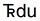
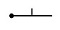

Database Design
As with the overall digital data package, some geologic map database elements are required, some are as-needed, and some are optional (fig. 1). Required and as-needed elements are specified below. Optional elements are described in appendix 2; note that additional optional elements are permitted by this schema. For each element (that is, each feature dataset, feature class, or nonspatial table), we provide a name, identify the element type, and enumerate the fields (attributes) in the relevant table. Unless otherwise noted, all fields are of data type text ( = string). For each field, we briefly discuss content and domains where appropriate. For some elements, this is followed by a short example table and some further discussion.

Figure 1. ArcCatalog view of the contents of a GeMS-structured database, showing required, as-needed, and optional database elements. As-needed elements must be present in the database if they are part of the content of a map report. Optional elements may or may not be present, at the discretion of the author and publisher. Note that the feature dataset for a single cross section is named CrossSectionA; additional cross sections are named CrossSectionB, CrossSectionC, and so on. Click the figure to enlarge.
General Considerations
This Design Uses a Relational Database
This database design relies on relations (joins, or relationship classes) between the various feature classes and nonspatial tables. Examples of these relations include the following (the type of relation is shown in brackets):
- From the MapUnit field in MapUnitPolys feature class to the MapUnit field in DescriptionOfMapUnits table [many-to-one].
- From all xxxSourceID fields (for example, DataSourceID, LocationSourceID, AnalysisSourceID, DefinitionSourceID) in all feature classes and some nonspatial tables to the DataSources_ID field in the DataSources table [many-to-one].
- From the Type, ExistenceConfidence, IdentityConfidence, ScientificConfidence fields, etc., in all feature classes and some nonspatial tables to the Term field in the Glossary table [many-to-one].
Figures 2, 3, and 4 show relations among the elements of this database design. (Click the figures to enlarge.)
Figure 2. Entity-relationship diagram for selected polygon feature classes and associated nonspatial tables, highlighting required and as-needed database elements. Also highlighted are primary keys, values defined in Glossary table, and values defined in DataSources table. Black arrow shows topological relationship between MapUnitPolys and ContactsAndFaults feature classes; blue arrows show other foreign key relationships. Topology rules (bulleted items) are listed for polygons in MapUnitPolys feature class.

Figure 3. Entity-relationship diagram for selected line feature classes and associated nonspatial tables, highlighting required and as-needed database elements. Also highlighted are primary keys, values defined in Glossary table, and values defined in DataSources table. Black arrow shows topological relationship between ContactsAndFaults and MapUnitPolys feature classes; blue arrow shows other foreign key relationship. Topology rules (bulleted items) are listed for lines in ContactsAndFaults, GeologicLines, and MapUnitLines feature classes.

Figure 4. Entity-relationship diagram for selected point feature classes and associated nonspatial tables, highlighting required and as-needed database elements. Also highlighted are primary keys, values defined in Glossary table, and values defined in DataSources table. Blue arrow shows foreign key relationship.
Field Hygiene
- GeMS does not, in general, prescribe the lengths of text fields; field lengths need to be long enough to encompass all values but short enough to not unduly inflate the size of the database.
- It is important that required fields not be deleted, even if all values in the field are null (that is, they have no content). Deletion of required fields would create unnecessary ambiguity: questions such as “Is this a GeMS-compliant database?” or “Is the database incomplete or corrupted?” would certainly arise.
- When a particular instance (row value) of a field is intended to have no content, it should be set to <null> if the underlying database software supports an explicit <null> value. If the software does not support a <null> value, then enter a text string: use “#null” for text fields that are long (that is, ≥5 characters); use “#” for short (<5 characters) text fields. For numeric fields, do not use 0; use either −9 or −9999 (but be consistent; do not use both −9 and −9999 for null values in the same numeric field).
- Fields should not be repurposed to hold other types of information. To store other attribute information in a table, you must add other fields. As noted below, such extensions to the GeMS database schema are encouraged.
- The values in certain fields must be defined in the Glossary table. These fields are highlighted in magenta bold type in the tables that follow. (See Required Elements and As-Needed Elements pages.)
- For most feature classes, a Notes field is prescribed; however, populating this field is always optional, and it may be omitted if desired.
- All feature classes and nonspatial tables contain a primary key field that has a name in the form of TableName_ID. When values of this primary key populate a field in another feature class or nonspatial table, that field must have a different name. For example, values of DataSources_ID populate fields named DescriptionSourceID (in the DescriptionOfMapUnits table), LocationSourceID (in point data tables), and DataSourceID (in many tables). Tables 6, 7, 8, and 9 show examples of these relations in various data tables.
Note that, for the foliation measurement example in table 9 (OrientationPoints_ID = “ORP02”), the location was determined by one worker (LocationSourceID = “DAS4”), and the orientation of foliation was measured by another (OrientationSourceID = “DAS3”). The map author chose to list these as two separate sources in the DataSources table (see table 6). Alternatively, the author could have chosen to combine both OrientationSourceID and LocationSourceID into a third source, for example, “DAS5” (Source = “fieldwork by A.B. Geolog and C.D. Nagt, 2014”; see table 6). See further discussion in the “DataSources (Nonspatial Table)” section below.
If data loaded into the database do not already have user-managed primary keys, we suggest that primary key values be created from a three-letter prefix that is based on an abbreviation of the name of the containing table (for example, in the MapUnitPolys feature class, use the abbreviation “MUP” as the prefix for values of MapUnitPolys_ID [see table 12]; in the ContactsAndFaults feature class, use “CAF” for values of ContactsAndFaults_ID [see table 13]), combined with an integer suffix that is unique in the containing table. The suffix could be the text representation of the Esri database-maintained ObjectID that is included in all feature classes and nonspatial tables (for example, a row that has ObjectID = 27 in the MapUnitPolys feature class could have MapUnitPolys_ID = “MUP027”). Following this pattern provides unique identifiers for all features within the database as well as easily understood foreign keys.
Table 6. Examples of selected fields (and their values) in a DataSources table.
[See also, tables 15, 16]
| Field name | ||
|---|---|---|
| Source | Notes | DataSources_ID |
| this report | <null> | DAS1 |
| Smith, J.G., 1899 | Smith, J.G., 1899, Geologic map of XYZ quadrangle: USGS GQ 9999, scale 1:125,000. Georeferenced and digitized by authors of this report | DAS2 |
| fieldwork by A.B. Geolog, 2012-2015 | <null> | DAS3 |
| fieldwork by C.D. Nagt, 2014 | <null> | DAS4 |
| fieldwork by A.B. Geolog and C.D. Nagt, 2014 | <null> | DAS5 |
Table 7. Examples of selected fields (and their values) in a DescriptionOfMapUnits table.
[See also, table 14]
| Field name | |||
|---|---|---|---|
| MapUnit | Name | DescriptionSourceID | DescriptionOfMapUnits_ID |
| Qal | Alluvium | DAS1 | DMU1 |
| Qgd | Glacial drift | DAS1 | DMU2 |
| Trg | Triassic granitic rocks | DAS1 | DMU3 |
Table 8. Examples of selected fields (and their values) in a ContactsAndFaults feature class.
[Abbreviations: N, no; Y, yes. See also, table 13]
| Field name | |||
|---|---|---|---|
| Type | IsConcealed | DataSourceID | ContactsAndFaults_ID |
| contact | N | DAS1 | CAF001 |
| thrust fault | Y | DAS2 | CAF002 |
Table 9. Examples of selected fields (and their values) in an OrientationPoints feature class.
[See also, table 22]
| Field name | ||||
|---|---|---|---|---|
| Type | Azimuth | LocationSourceID | OrientationSourceID | OrientationPoints_ID |
| bedding | 73 | DAS3 | DAS3 | ORP01 |
| foliation | 120 | DAS4 | DAS3 | ORP02 |
Type, MapUnit, Label, and Symbol Fields
Most feature classes in the GeMS schema contain the fields Type, Label, and Symbol; however, the MapUnitPolys polygon feature class contains the field MapUnit in lieu of the Type field, as discussed below (see tables 10 and 11 for examples):
- The Type field specifies what kind of feature is represented (see table 10). For example, a line within the ContactsAndFaults feature class could be a “contact”, “thrust fault”, or “water boundary”; a point within a GeochronPoints feature class could represent the location of a potassium-argon date.
- The MapUnit field in the MapUnitPolys feature class (see table 11) is the equivalent of the Type field in other feature classes, in that it specifies what map unit is represented (for example, “Qal”, “Tg”, “Ks”, “Trdu”). The value of MapUnit is commonly an ASCII-character12 equivalent of the map-unit label; see discussion of the Label field below.
- The Label field contains the desired annotation for a feature: the annotation may be simple text (for example, “SAN ANDREAS FAULT”, “14 Ma”), or— in the MapUnitPolys feature class—it is an ASCIIcharacter equivalent of the map-unit label; it may have the same value as MapUnit (for example, “Qal”) and have an appended “?” if IdentityConfidence is “questionable”, but it will differ if a special font is used for geologic age symbols (for example, “^du”, which results in the map-unit symbol  when displayed with the FGDCGeoAge font; see table 11).
- The Symbol field specifies either a point symbol (sometimes called a marker symbol), a line symbol, or an area-fill symbol (a color and (or) pattern fill) for the feature (for example, a dot for a potassium-argon age locality; a heavy black line for a fault; a pale-yellow color fill for a polygon of alluvium) (see tables 10 and 11).
Table 10. Examples of values in the Type, Symbol, and Label fields in a point feature class and the resulting map images.
[See also, table 11]
| Database field name1 | Map image | |||
|---|---|---|---|---|
| Type | Symbol2 | Label | Symbol | Label3 |
| radiocarbon | 31.21 | 14,020±45[4] | • | 14,020±45 |
| inclined upright bedding | 06.13 | 30[5] |  | 30 |
| vertical bedding | 06.03 | <null>[6] |  |
|
Table 11. Examples of values in the MapUnit, IdentityConfidence, Symbol, and Label fields in the MapUnitPolys feature class and the resulting map images.
[See also, tables 10, 12]
| Database field name1 | Map image | ||||
|---|---|---|---|---|---|
| MapUnit | IdentityConfidence | Symbol2 | Label3 | Symbol | Label4 |
| Qal | certain | 60 | Qal | Qal | |
| Trdu[5, 6] | certain | 730 | ^du[7] | ||
| Qls | questionable | 90 | Qls?[8] | Qls? | |
This three-fold division of what, at first glance, may seem to be one entity is necessary because (1) it is desirable for the database to provide a preferred visualization of the map data, and (2) there generally is not a one-to-one correspondence between values of Type (or MapUnit), Symbol, and Label:
- For MapUnitPolys, values of Label will differ from those of MapUnit when special symbols are used to specify geologic ages (for example, the Label value of “^du”, which results in the map-unit symbol when displayed with the FGDCGeoAge font, is different from the MapUnit value of “Trdu”; see table 11).
- For MapUnitPolys, values of Label may also reflect values of the IdentityConfidence field (that is, queries may be added).
- For lines in ContactsAndFaults, values of Symbol typically reflect the combination of values of Type, IsConcealed, and the confidence fields.
- Faults that have the same Type value likely will have different names (for example, “San Andreas Fault”, “Hayward Fault”) and, thus, different values of Label.
Polygons, Lines, and Topology—What Goes Where?
By convention, a geologic map depicts the distribution of earth materials on a particular map horizon, usually the Earth’s surface. Map-unit polygons (which can also include areas of open water, permanent snowfields, glaciers, and unmapped areas) are bounded by contacts, faults, shorelines, snowfield or glacier boundaries, scratch boundaries (that is, boundaries for which no line is drawn), and (or) the map boundary. Contacts do not normally separate polygons of the same map unit, although faults commonly do. In addition, a map-unit polygon may be partly bisected by a fault whose trace terminates within that polygon (that is, a dangling fault in GIS jargon).
The distribution of units on a particular map is recorded in the polygon feature class MapUnitPolys. Contacts that separate map units, faults that bound map units, and dangling faults are recorded in the line feature class ContactsAndFaults. Elements of these feature classes are involved in topological relations that are described below. Elements are assigned to these feature classes to simplify enforcement of topological relations when constructing a database, as well as to facilitate topological queries when using the database.
Some maps show contacts and faults that are concealed beneath covering map units (for example, beneath thin surficial deposits or open water). These concealed contacts and faults are recorded in the line feature class ContactsAndFaults, and their concealed status should be encoded as IsConcealed = “Y”. Such concealed contacts and faults may or may not be involved in topology with MapUnit polygons; in addition, concealed contacts and faults may dangle.
Many geologic maps contain other feature classes that are not involved fully in map topology (for example, fossil localities, fold axes, or bedding-orientation measurements). Feature classes for such features are described in the “As-Needed Elements” section below.
Some database producers may choose to create polygons and edit linework in the absence of a topology relationship class. For instance, rather than using the topology editing tools to synchronously edit boundaries that are shared between line and polygon feature classes, users may prefer to create the line features (boundaries) first and then construct the polygons as (or after) their bounding lines are finished. For the purposes of this data-delivery design, the method used to produce the feature classes does not matter; it only matters that the feature classes in the published database follow the topology rules outlined for each feature class.
Directional Lines
Many types of geologic lines have directionality, equivalent to handedness. Examples are thrust faults, which (by convention) have sawteeth on the side of the upper (overlying) plate, and normal faults, which (also by convention) have half-circle or ball-and-bar decorations on the downthrown (overlying) side of the fault. The direction that the decorations point indicates the geometry of that feature.
To preserve this directionality in the database, we subscribe to the right-hand rule for such line features: that is, lines should be created or edited such that the decoration points to the right while one travels from the start of the line segment to its end. In the case of up-down (U–D) notation on faults, the direction that has the right side of the fault in the down (D) direction should be considered as the right-hand direction.
Shapefile Version of the Database
To make database content available without the requirement of having an ArcGIS license, now or in the future, an open shapefile version of the database is required. This version uses the well-documented shapefile and .dbf formats, which have length limitations of fields (must have ≤255 characters) and field names (must be ≤10 characters).
The open shapefile version should include the following elements:
- A shapefile for each feature class.
- A .dbf file for each nonspatial table.
- For each feature class or nonspatial table that originally contained long (>255 characters) fields, a text file that documents the original contents of the long (now shortened) fields.
- A text file that documents (1) the arrangement of feature classes into feature datasets, (2) the translation of feature class names to shapefile names, (3) the translation of nonspatial table names to .dbf file names, and (4) the translation of long field names to shortened field names.
The script GeMS_TranslateToShape_Arc10.py or its replacement (available at https://github.com/usgs/GeMS_Tools and at https://github.com/usgs/gems-tools-pro) automates the creation of this open shapefile version. The script also creates a simple shapefile version of the database that has truncated content and no related tables (that is, no Glossary, DescriptionOfMapUnits, DataSources, or GeoMaterialDict tables).
Citation
U.S. Geological Survey National Cooperative Geologic Mapping Program, 2020, GeMS (Geologic Map Schema)—A standard format for the digital publication of geologic maps: U.S. Geological Survey Techniques and Methods, book 11, chap. B10, 74 p., https://doi.org/10.3133/tm11B10.
 (= Triassic).
(= Triassic).{kind=link}